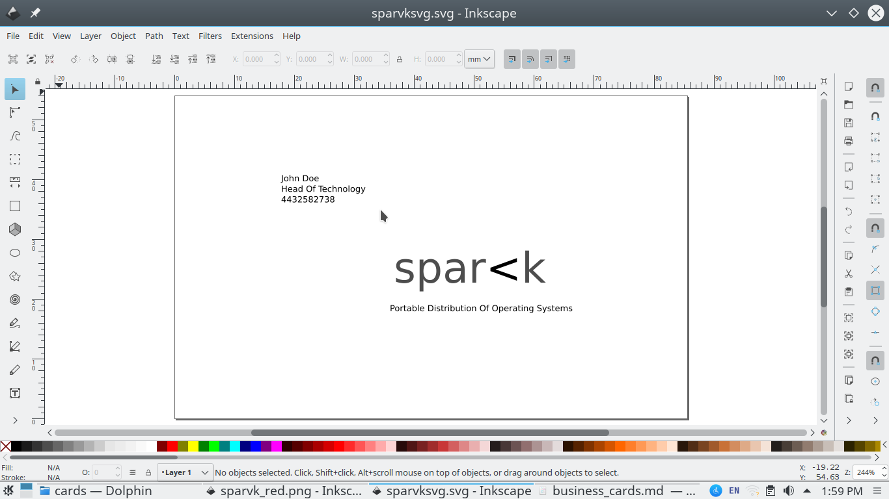

Inkscape is an opensource vector graphics editor that can be used to create banners, logos,icons,envelopes business cards,cover pages and other graphics. It is free for everybody to use and is an ideal tool for design firms (both big and small) who have to pay a hefty licensing fees to use proprietary drawing tools. Although this article demonstrates how to use inkscape on sparvk opensource operating system distribution you can install inkscape on any platform that you want. If you have not already installed inkscape on your sparvk machine please go this section first.
For this tutorial we'll do a very simple project of creating a business card on inkscape. The purpose of this tutorial is not to show off the powers of inkscape but to provide you, as a designer, an opensource alternative to proprietary drawing applications. To keep things even simpler we'll only be printing on one side of the card.
-
When you first open inkscape you'll be presented with a canvas of predefined dimensions that do not match with the standard dimensions of a business card (3.5x2 inches). So our first objective is to resize the canvas to look like a business card. Luckily for us inkscape comes preconfigured with standard page sizes for a number of use cases
- Go to file and navigate to "Document properties"
- In the document properties find the page size section. Scroll down and choose the Business Card layout. Note that you'll find a couple of business card layouts choose the one that is appropriate for you.
- Go to the background color section and choose an appropriate background. For this example white is the safe and easy choice.
- Now close the document properties menu and head back to the canvas. On the toolbar to your right you'll find zoom buttons select "Zoom to fit page in window" to magnify the work area and make it easier for you to design.
- With the groundwork done we're now ready to actually design the card. The design tools on inkscape are located on the column to the left. For our purpose we need just a text tool for
- The name and the contact information of the card holder
- The name of the organization
- Its tagline
-
Choose the text tool and place the cursor on the top left point of your cursor. Add a bit of space and type the name, position and phone number. Now move the cursor to the middle and type the name of the company. Just below type the tagline of your company.
- Note that the font size of the card may be change by simply selecting the font size on the toolbar to your top. Here's what the card should look like when its all done.

Extra -- Adding a bit of jazz to your business card
Although our business card provides sufficient information it is not all that stylish. A card needs to be simple but it also needs to make a good first impression so that it can be remembered. The easiest way to add a bit of sparkle to your card is to play with colors. You can
- Choose a different color to highlight the name of the company
- Create sections within your card to make the information more readable.
- Add shapes and objects on to the card (but don't go overboard you have a very limited space on the paper to make these changes)
You'll need to know a few more things to accomplish this though:-
-
To change the text color just navigate to the bottom of the screen and choose from the one you like.
-
You can create different types of shapes. All shapes tools are on the panel to your left. Curves can be drawn with the help of straight line and beizer curves tool. Rectangles and squares can be drawn with the rectangle tool. Similarly there are tools for creating circles, 3d boxes and even stars. No shortage of things to play with!
- To change the color of the shape you'd have to pick a "stroke color". Click on the shape for which you want to change the color. Navigate to the bottom of the screen and click on the "stroke" label to pick a stroke color
Here's what the card looks like after I add a horizontal rule and a bit of color to the company name

Organizing your inkscape files
If you are a professional designer you'll need to keep your inkscape files organized. Sparvk enabled operating system provides an easy to use filesystem manager that lets you store all your files in multiple levels of directories. With a "split view option" you can quickly move files and diretories from one location to another without having to jump through the file system -- that is choose the destination and location in a single window. If you have a remote ftp server you can even connect the sparvk enabled file system to the network storage instead of the local one.
For users who want more, there are options to install and use even more utilities like midnight commander a powerful command line base file manager. An organized file system facilitates collaboration among colleagues increasing the productivity of the team. sparvk understands that and therefore provides you with the tools best suited for this job.
Install inkscape on sparvk and draw freely
Installting inkscape on sparvk is easy
- Open the terminal
- Type su and press enter you'll be prompted for your administrator password.
- Now type ap-get install inkscape. Hit enter and you're done.
Alternatively go the software center. Search for inkscape and click on the install button.
As you can probably tell from reading this example inkscape is a very easy to use tool. Even if you're not a designer knowing your way around inkscape can come in handy. You might need to either create some graphics from scratch or more probably to edit the existing vector gaphic documents to your liking.